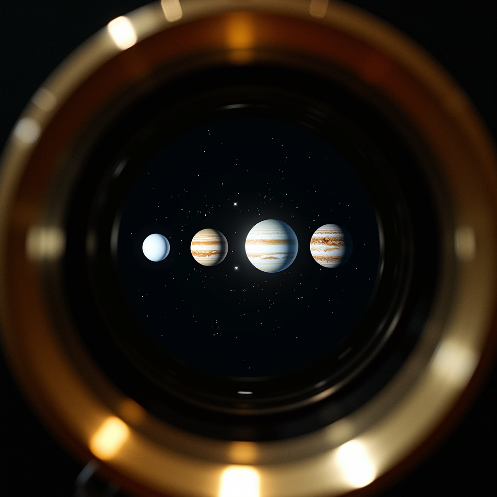
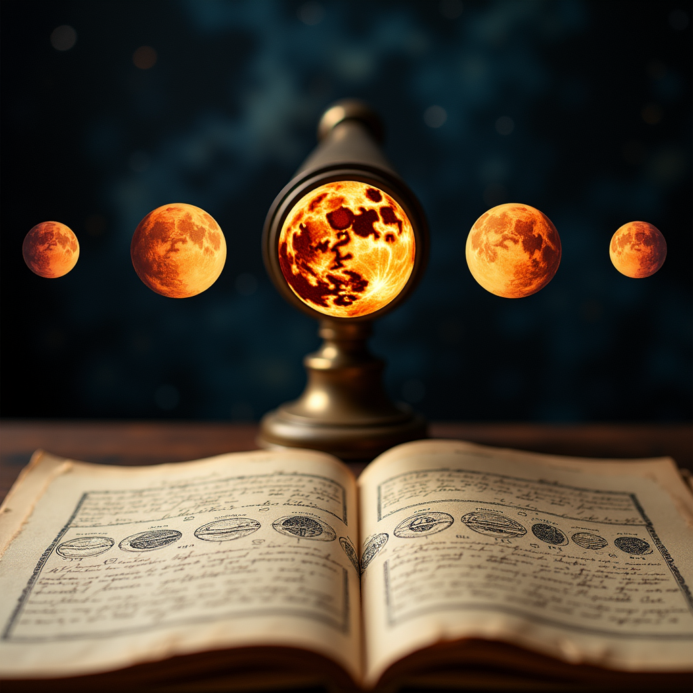
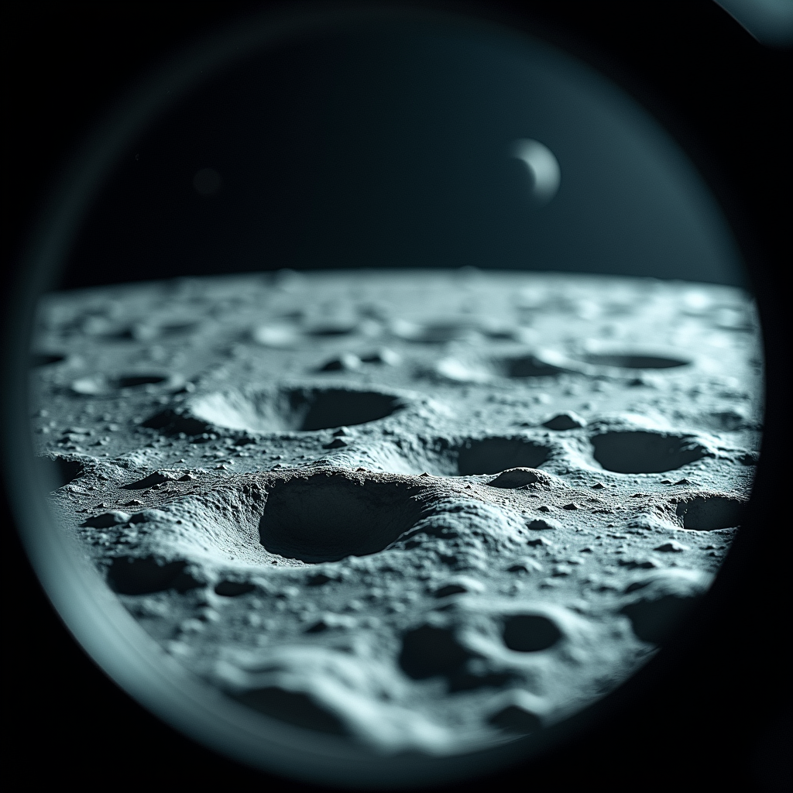

History and evolution of telescopes
# HTML Content - Telescopes and Observatories
The history of the telescope begins in 1608 in the Netherlands, when three different inventors — Hans Lippershey, Jacob Metius and Sacharias Janssen — simultaneously patent optical instruments allowing magnification of distant objects. However, it is Galileo who revolutionizes astronomy in 1609 by constructing his first refracting telescope with a converging lens. With a magnification of only 8 times, he discovers the four largest satellites of Jupiter, the phases of Venus and the mountains of the Moon, forever transforming our understanding of the universe.
In the seventeenth century, Isaac Newton develops the reflecting telescope in 1668, using a concave mirror instead of lenses, thus eliminating chromatic aberration. This major innovation becomes the basis of practically all modern large telescopes. Between 1672 and 1758, refracting telescopes reach extreme lengths, such as the 40-meter telescope at the south pole in Greenwich, deemed impractical and eventually abandoned.
Transition to the modern era
The nineteenth century marks the acceleration of optical technology. The 1.22-meter reflecting telescope at Mount Hopkins in Arizona, completed in 1889, offered unparalleled clarity for the time. This installation becomes the precursor to modern observatories dedicated to systematic scientific research. In 1897, the Yerkes telescope with its 1.02-meter refracting lens remains the largest refracting telescope ever built.
The great terrestrial observatories of the twentieth century
The inauguration of Mount Wilson Observatory in California in 1917 marks a decisive turning point. Its 2.54-meter Hooker telescope enables Edwin Hubble to discover in 1924 that the Milky Way is not the only galaxy, but one among billions. This discovery revolutionizes cosmology and demonstrates the true immensity of the universe.
Mount Palomar, which came into service in 1948, houses the 5.08-meter Hale telescope, remaining the world's largest single optical telescope for 30 years. For three decades, this instrument generates major observations in extragalactic astronomy and participates in creating the first complete photographic catalog of the northern sky.
In the Soviet Union, the 6-meter Zelenchuk telescope, inaugurated in 1976 in the Caucasus, briefly becomes the world's largest telescope, before being quickly surpassed by American and European technological advances.
Multiple observatories and specialized observations
The Roque de los Muchachos Observatory in the Canary Islands, established in 1985 at 2400 meters altitude, brings together several European national telescopes, creating a major collaborative observation center. Similarly, Mauna Kea in Hawaii, located at 4207 meters altitude, has hosted since 1970 dozens of telescopes, including the Canada-France-Hawaii 3.6-meter and the Subaru 8.2-meter launched in 1999.
Revolutionary space observatories
On April 24, 1990, the Hubble Space Telescope is launched by the Space Shuttle Discovery. Although its 2.4-meter primary mirror is initially affected by spherical aberration, the maintenance mission in December 1993 installs corrective optics transforming Hubble into the most powerful observation instrument ever created. Over its 34 years of operation, Hubble produces more than 1.5 million observations, generating more than 20,000 published scientific articles.
The James Webb Space Telescope, launched on December 25, 2021 by Arianespace, represents the culmination of 25 years of development and 10 billion dollars of investment. With a primary mirror composed of 18 hexagonal beryllium segments coated in gold, totaling 6.5 meters in diameter, the JWST observes the infrared universe with unprecedented clarity, scrutinizing galaxies formed less than 100 million years after the Big Bang.
Contemporary technological innovations
Next-generation terrestrial telescopes employ adaptive optics to correct atmospheric distortions in real time. The European Southern Observatory in Chile operates the Very Large Telescope since 1998, assembling four 8.2-meter telescopes each for power equivalent to a 16-meter diameter mirror.
The Extremely Large Telescope currently under construction in Chile will have a 39.3-meter primary mirror, projecting its first light for 2027-2028. The Thirty Meter Telescope in preparation at Mauna Kea will be equipped with a 30-meter mirror, revolutionizing astronomical observation capabilities with a resolution 10 times superior to current telescopes.
Interferometry networks
The Atacama Large Millimeter Array in Chile, completed in 2013, groups 66 antennas operating in an interferometric network, offering resolution equivalent to a 16-kilometer diameter telescope. This technology revolutionizes millimeter and submillimeter astronomy, detecting objects invisible to visible wavelengths.
Chronology of major observatory milestones
- 1608: Invention of the telescope in the Netherlands
- 1609: Galileo builds his first 20 cm refracting telescope
- 1668: Newton invents the reflecting telescope
- 1889: 1.22-meter telescope at Mount Hopkins enters service
- 1917: Inauguration of Mount Wilson with the 2.54-meter Hooker telescope
- 1948: 5.08-meter Hale telescope at Mount Palomar becomes operational
- 1990: Launch of the Hubble Space Telescope
- 2021: Deployment of the James Webb Telescope
- 2027-2028: First light of the Extremely Large Telescope
Scientific impact and major discoveries
Telescopes and observatories have enabled the most transformative scientific discoveries. The measurement of stellar parallax in 1838 by Friedrich Wilhelm Bessel confirms the extreme distance of stars. Hubble's discovery of galaxy recession in 1929 establishes the expansion of the universe, foundation of Big Bang theory. The observation of the first exoplanets in 1995 around 51 Pegasi, detected by Michel Mayor and Didier Queloz at Mont-Provence, opens a new domain of cosmic research.
On April 10, 2019, the Event Horizon Telescope collaboration, using eight radio telescopes distributed worldwide, produces the first image of a black hole, capturing the shadow of M87 at 55 million light-years away. This achievement synthesizes data corresponding to 5 petabytes of information, validating Einsteinian predictions a century after their formulation.
"The telescope began as an instrument of adventurous curiosity. It has transformed into an instrument of systematic scientific progress. What we see through the telescope is not merely the structure of the universe, but the reflection of our own growing understanding of reality." — Carl Sagan, astronomer and scientific communicator


